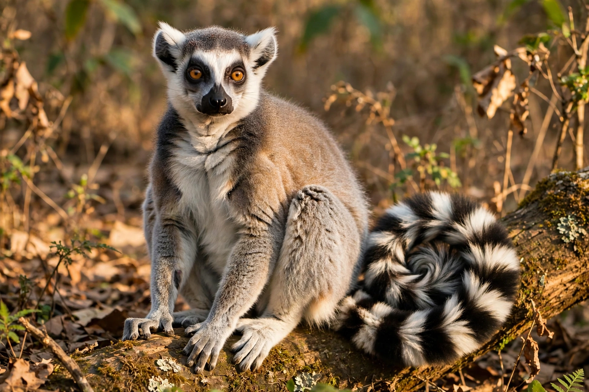

Primate

[Image: a ring-tailed lemur sitting upright in sunlight, showing the forward-facing eyes and grasping hands typical of primates]Primates are an order of mammals comprising lemurs, lorises, tarsiers, monkeys, apes and humans — over 500 species, mostly tropical and mostly arboreal in origin. Their defining traits reflect life in the trees and, later, social complexity: forward-facing eyes with binocular vision, grasping hands and feet with nails instead of claws and sensitive fingertip pads, relatively large brains, long development and lifespans, and strong dependence on learning and social bonds.
Primates are studied as our own order: comparative primatology calibrates what is ancient in human behaviour (grooming alliances, reconciliation, tool traditions) and what is new (language, cumulative technology). Chimpanzees and bonobos share about 98–99% of human DNA sequence and display tool manufacture, hunting cultures and politics of a recognisably familiar kind.
Groups
Strepsirrhines (lemurs of Madagascar, lorises, galagos) retain a wet nose and tapetum; haplorhines (tarsiers, monkeys, apes) are the dry-nosed, more visual branch. New World monkeys (with prehensile tails in some) split from the Old World lineage ~40 million years ago, presumably by rafting across the Atlantic. Apes (gibbons and the great apes — orangutans, gorillas, chimpanzees, bonobos, humans) lack tails entirely.
Conservation
Around 60% of primate species are threatened with Extinction — the standard assessment of the field — driven by habitat loss, hunting and the pet trade. Madagascar's lemurs, found nowhere else, are the most endangered mammal group on Earth.